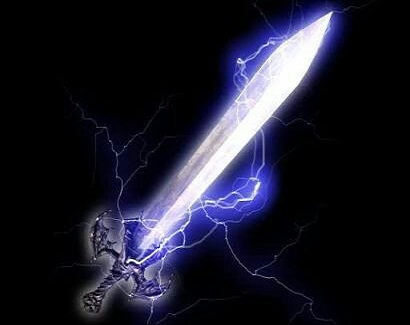

Alastor é um Devil Arm vivo , a "Thunder Sword" e "Spirit of Lightning", aparecendo em Devil May Cry . É também uma das duas
chaves ao lado de Ifrit que pode desbloquear Dante 's poder interior. Ele só pode ser empunhado pelo "escolhido" que pode conquistá-lo,
mas é capaz de conceder a seu possuidor a velocidade relâmpago e capacidade aérea.
Dante encontra Alastor embutido no peito de uma escultura de uma mulher agonizante, e fala a Dante de sua intenção de escravizá-lo. Ele voa pelo ar e o empala no peito, prendendo-o no chão e aparentemente matando-o. No entanto, Dante acorda, puxando-se para cima e para fora da lâmina, causando um grande sangramento. Ele então estende a mão e pega a espada, subjugando o demônio dentro dela.
Alastor tem a cabeça de um dragão mordendo a lâmina, com as asas do dragão atuando como o guarda da espada. O punho tem um padrão espiralado levando a crânios na parte inferior com uma ponta apontando para fora.